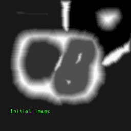

基于距离变换和分水岭算法的图像分割
在上图中，你可以看到使用简单的阈值和轮廓检测无法提取的对象示例，因为这些对象是互相接触的、重叠或两者兼具的。轮廓提取过程会将每组触摸对象视为单个对象，而不是多个对象 ——它不知道这是多个钱币。是吗？
我们来演示简单阈值和轮廓检测的局限性。我们采用以下步骤： 我们先载入图像，并进行均值滤波(可见均值滤波)：#include <opencv2/opencv.hpp>
#include <vector>
using namespace cv;
using namespace std;
int main() {
Mat img = imread("coin-1.jpg"); //读入图像
Mat shifted, bin;
pyrMeanShiftFiltering(img, shifted, 21, 51); // 均值滤波
imshow("After MeanShiftFiltering", shifted); // 显示
...
然后我们把它转换成灰度图并二进制化(简单阈值流程)：
...
cvtColor(shifted, shifted, COLOR_BGR2GRAY); // 转成灰度图
threshold(shifted, bin, 70, 255, THRESH_BINARY); // 二进制
imshow("After Threshold", bin); // 显示
...
最后进行轮廓检测，还有一些花桥的绘图，可视化结果：
...
RNG rng(12345); // 随机数
Mat res; // 结果图
img.copyTo(res);
// 轮廓检测
vector<vector<Point> > contours;
findContours(bin, contours, RETR_EXTERNAL, CHAIN_APPROX_SIMPLE);
for (int i=0; i<contours.size(); ++i) {
Scalar color = Scalar(rng.uniform(0,256), rng.uniform(0,256), rng.uniform(0,256)); // 随机颜色
drawContours(res, contours, i, color, -1); // 绘出轮廓
// 算出重心点mc
Moments mu = moments(contours[i]);
Point2f mc = Point2f(static_cast<float>(mu.m10 / (mu.m00 + 1e-5)) - 10,
static_cast<float>(mu.m01 / (mu.m00 + 1e-5)) + 10);
putText(res, to_string(i), mc, FONT_HERSHEY_SIMPLEX, 1, Scalar::all(255), 2); // 写上轮廓ID
}
scaleAdd(img, 0.4, res, res); // 叠加结构图
imshow("Result", res); // 显示
// 等待退出
waitKey(0);
destroyAllWindows();
return 0;
}
如上可见，结果非常地糟糕。使用简单的阈值检测和轮廓检测，我们的程序报告图像中只有3个硬币，即使很明显有9个。出现此问题的原因是硬币的边界在图像中相互接触，因此findContours()函数仅将一组硬币视为单个对象，而实际上它们是多个单独的硬币。
注：一系列形态变换（特别是侵蚀）可以帮助我们获得此特定图像的最佳结果。但是，对于重叠的物体，这些形态变换是不够的。出于这个示例的原因，我们假设形态运算不是可行的选择，因此我们可以探索距离变换和分水岭算法。
解决方案
距离变换
距离变换是一种运算符，是形态换算的其中一种，通常仅应用于二进制图像。变换的结果是一个看起来类似于输入图像的灰度图像，不同之处在于前景区域(白色像素区域)内的像素，灰度强度发生了变化。这些像素的灰度强度反映了那个点距最近的(黑色)边界的距离。联想距离变换的一种方法是，首先想象输入二进制图像中的前景区域是由某种均匀的缓慢燃烧的易燃材料制成的。然后想象同时在前景区域边界上的所有点处着火，并让火燃烧到内部。如果然后用火第一次到达该点所花费的时间标记内部的每个点，则我们已经有效地计算了该区域的距离变换。下图显示了简单矩形的距离变换：
距离转换有几种不同的类型，这取决于使用哪种距离度量来确定像素之间的距离。上图中的示例使用“棋盘”距离度量，但也可以使用欧氏距离度量和“城市街区”度量。
简单矩形的距离变换。注：这里使用的是“棋盘”距离度量(Chessboard distance, OpenCV：DIST_C)。
距离度量 DistanceTypes
- 欧氏距离(Euclidean distance)，OpenCV：DIST_L2
也称L2距离。distance = sqrt[(x2-x1)2 + (y2-y1)2]- “城市街区”距离(City block distance)，OpenCV：DIST_L1
也称L1距离或曼哈顿距离(Manhattan distance)。distance = |x2-x1| + |y2-y1|- “棋盘”距离(Chessboard distance)，OpenCV：DIST_C
distance = max(|x2-x1|, |y2-y1|)
注，我们一般使用欧氏距离，然而最后两个指标通常比欧式要快得多，因此有时在速度至关重要但准确性不太重要的情况下使用。
选择了度量，接下来还有许多方法可以计算二进制图像的距离变换。一种直观但极其无效率的方法是使用适当的内核结构元素执行多次连续腐蚀，直到图像的所有前景区域白色像素都被侵蚀掉为止。每个像素都标上消失之前必须执行的腐蚀次数，这就是它的距离变换。应使用的实际结构元素取决于选择的距离度量。3×3正方形元素适合“棋盘”距离变换，十字形元素适合“城市街区”距离变换，而圆盘形元素适合欧氏距离变换。当然，实际上，不可能在小规模的离散网格上生成良好的圆盘状元素，但是有些算法会在每次腐蚀时改变结构元素，以近似圆形元素的结果。典型地，对于快速，粗略地估计欧氏距离，使用3×3内核。更精确地估计欧氏距离，可以使用5×5内核或精确算法。在这里，我们通过一些示例说明欧几里德距离变换。
距离变换对图像噪音很敏感

OpenCV distanceTransform
void distanceTransform(Mat & src, Mat & dst, Mat & labels, int distanceType, int maskSize, int labelType=DIST_LABEL_CCOMP)
参数
src —— 8位单通道(二进制)源图像。
dst —— 输出具有计算出的距离的图像。
它是与src大小相同的8位或32位浮点单通道图像(CV_32FC1)。
labels —— 输出标签的二维数组(离散Voronoi图)。
它的类型为CV_32SC1，大小与src相同。
distanceType —— 距离的类型，见上"距离度量DistanceTypes"
maskSize —— 距离变换内核的大小。
3、5或DIST_MASK_PRECISE(精准算法，仅能和DIST_L2使用)。
在DIST_L1或DIST_C距离类型的情况下，该参数被强制为3，
因为3×3遮罩与5×5或更大的光圈具有相同的结果。
labelType —— 要构建的标签数组的类型。
重载
void distanceTransform(Mat & src, Mat & dst, int distanceType, int maskSize, int dstType=CV_32F)
参数
src —— 8位单通道（二进制）源图像。
dst —— 输出具有计算出的距离的图像。
它是大小与src相同的8位或32位浮点单通道图像。
distanceType —— 距离的类型，见上"距离度量DistanceTypes"
maskSize —— 距离变换内核的大小。
3、5或DIST_MASK_PRECISE(精准算法，仅能和DIST_L2使用)。
在DIST_L1或DIST_C距离类型的情况下，该参数被强制为3，
因为3×3遮罩与5×5或更大的光圈具有相同的结果。
dstType —— 输出图像的类型。它可以是CV_8U或CV_32F。
CV_8U类型只能用于该函数的第一个变体，
并且distanceType==DIST_L1。分水岭算法(Watershed)
分水岭是用于分割的经典算法，也就是说，用于分离图像中的不同对象。哲学
任何灰度图像都可以视为地形图表面，其中高强度表示山峰和丘陵，而低强度表示山谷。你开始用不同颜色的水（标签）填充每个孤立的山谷（局部最小值）。随着水的上升，取决于附近的峰（梯度），来自不同山谷，显然具有不同颜色的水将开始合并。为了避免这种情况，你可以在水汇合的位置建造围墙。你将继续填充水和建造围墙的工作，直到所有山峰都在水下。然后，你创建的围墙将会是最后的图像分割结果。这是分水岭背后的“哲学”。
基于标记的分水岭算法
但是由于噪声或图像中的任何其他不规则性，上面方法会造成过分分割的结果。因此，OpenCV实施了基于标记的分水岭算法，你可以在其中指定要合并的所有山谷点，哪些不是。这像是一个交互式图像分割。我们要做的是为我们知道的对象提供不同的标签。用一种颜色（或强度）标记我们确定为前景的区域，用另一种颜色标记我们确定为背景的区域，最后确定我们不确定的区域，将其标记为0。这就是我们的标记。然后应用分水岭算法，我们的标记将使用给定的标签进行更新，并且对象的边界的值为-1。这就像是从你指定的那几个区域开始倒人水。
基于标记控制的分水岭
OpenCV watershed
void watershed(Mat & image, Mat & markers)
参数
image —— 输入。8位3通道CV_8U3C图像。 markers —— 输入/输出。标记的32位单通道CV_32FC1图像(map)。它的大小应与image相同。
所以？
说了那么多理论。我们回归“正题”——解决方案？在流程中我们添加距离变换和分水岭算法。流程图如下： 由于代码改动得多，我们再从头开始说起。先读取图像，然后均值滤波和简单阈值：
#include <opencv2/opencv.hpp>
#include <vector>
using namespace cv;
using namespace std;
int main() {
Mat img = imread("coin-1.jpg"); //读入图像
Mat shifted, bin; // 结果图
pyrMeanShiftFiltering(img, shifted, 21, 51); // 均值滤波
imshow("After MeanShiftFiltering", shifted); // 显示
cvtColor(shifted, shifted, COLOR_BGR2GRAY);
threshold(shifted, bin, 70, 255, THRESH_BINARY); // 阈值
imshow("After Threshold", bin); // 显示
...
然后进行距离变换：
...
// 距离变换
Mat dist, markers;
distanceTransform(bin, dist, DIST_L2, 3); // 欧氏距离
// 归一化范围={0.0，1.0}，以方便进行可视化和阈值化
normalize(dist, dist, 0, 1.0, NORM_MINMAX);
imshow("After distanceTransform", dist);
...
...
// 阈值获取dist的山峰部分，也就是确定肯定是前景的区域
threshold(dist, dist, 0.5, 1.0, THRESH_BINARY);
// 转换成CV_8U，因为之后的findContours需要
Mat sure_fg;
dist.convertTo(sure_fg, CV_8U);
sure_fg *= 255;
imshow("Sure foreground", sure_fg);
...
我们以不同颜色(灰度)标准前景区域在markers上。确保背景区域不是0而是1。然后再计算未知的区域：
“肯定是前景区域”蒙版
...
connectedComponents(sure_fg, markers); // 前景标记，每个标记有不同的颜色(灰度)
markers += 1; // 整个图+1，使背景不是0而是1值
// 未知区域标记
Mat unknown;
Mat kernel = Mat::ones(3, 3, CV_8U);
dilate(bin, bin, kernel, Point(-1, -1), 3); // 膨胀硬币二进制图3轮
unknown = bin - sure_fg; // 减去肯定使前景的区域，剩下的就是“未知”
imshow("Unknown", unknown);
...
我们把未知区域蒙版从CV_8U转换成CV_32S(与markers桶类型)。然后markers减去未知区域。这样以来，在markers上，0=未知区域。
“未知区域”蒙版
...
Mat unknown_32s;
unknown.convertTo(unknown_32s, CV_32S);
markers -= unknown_32s;
imshow("Markers", markers*10000);
...
我们进行分水岭算法，并用比较“开黑”的方式进行轮廓检测。最后一些花桥的可视化结果。
最终markers
...
// 分水岭算法
watershed(img, markers);
Mat markers_8u; // markers转成CV_8U，inRange所需
markers.convertTo(markers_8u, CV_8U);
double min_val, max_val;
minMaxLoc(markers_8u, &min_val, &max_val); // 获取markers中的最大值，可以从中知道有多少个区域
RNG rng(12345); // 随机数
Mat res;
img.copyTo(res);
for (int i=2; i<=static_cast<int>(max_val); ++i) { // 我们从2开始，因为0=边界，1=背景，>1 各个前景
Mat temp;
inRange(markers_8u, Scalar(i), Scalar(i), temp); // 提取特定灰度的区域
vector<vector<Point> > contours;
findContours(temp, contours, RETR_EXTERNAL, CHAIN_APPROX_SIMPLE); // 轮廓检测，肯定会只有一个轮廓，如果不是1就有问题
Scalar color = Scalar(rng.uniform(0,200), rng.uniform(0,200), rng.uniform(0,200)); //随机颜色
drawContours(res, contours, 0, color, -1); // 绘出轮廓
// 算出重心点mc
Moments mu = moments(contours[0]);
Point2f mc = Point2f(static_cast<float>(mu.m10 / (mu.m00 + 1e-5)) - 10,
static_cast<float>(mu.m01 / (mu.m00 + 1e-5)) + 10);
putText(res, to_string(i-2), mc, FONT_HERSHEY_SIMPLEX, 1, Scalar::all(255), 2); // 写下编号
}
scaleAdd(img, 0.5, res, res);
imshow("Result", res); // 显示结果
// 等待退出
waitKey(0);
destroyAllWindows();
return 0;
}
另外张图试试：